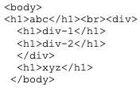
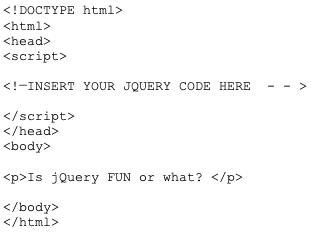

1. In jQuery terminology, what is the difference between the “jQuery function” and the “jQuery object”?
The jQuery object is the access point from which jQuery gains management of DOM objects, while a
jQuery function manipulates object states.
2. Write jQuery code to find all h1 elements that are children of a div element and make their background
color red.
Sample HTML:

$("div h1").css("background-color", "red");
3. Use a jQuery method to insert the text "YES!" at the end of the <p> element.

$("<span>YES!</span>").insertAfter("p");